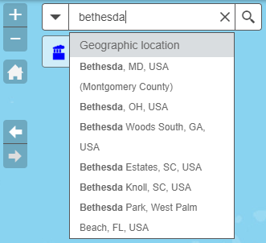
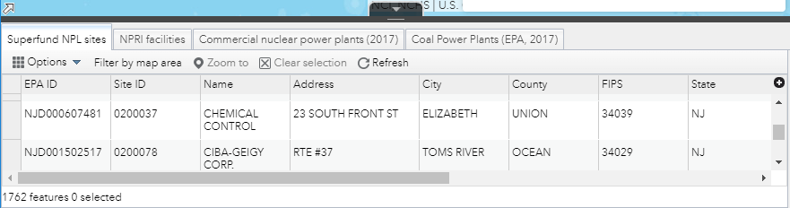

TOXMAP Help
Quick Tips
- TOXMAP lets you explore toxic chemicals released into the environment by certain industries and present in hazardous waste sites. The US EPA collects and maintains this data. See more about additional TOXMAP data.
- Some of the things you can do with TOXMAP:
- Browse TOXMAP data by turning layers on and off via the Table of Contents;
- Navigate the map free-form by hand, or by searching for a particular location;
- Search for TRI facilities or Superfund sites which release (or contain) specific chemicals and save your search results.
- Use the Toolbar to perform a variety of other actions, such as viewing the map legend and printing your map.
- View the raw data in table format via the Data Table.
- See demographic data and cancer/disease mortality data color-coded at the county and/or census tract level.
- Download TOXMAP data
- On desktop and laptop computers, TOXMAP works best at higher screen resolutions, with your web browser set to fill the entire screen. TOXMAP is not recommended for very old or slow devices, or while using slow or unreliable Internet connections. In these cases, try TOXNET/TRI to view and search TRI data.
- For more information, see the TOXMAP FAQ and Glossary.
- We value your feedback! Please contact us and tell us what you think of the new TOXMAP.
Navigation
Navigate the map in any of several different ways:
- Left-clicking and dragging the map will pan the map in any direction;
- Scrolling the mouse wheel will zoom the map in and out, anchoring it at the location of the mouse pointer;
- Holding down the Shift key and drawing a rectangle on the map will zoom to the area of this rectangle;
- The plus and minus icons (pictured) zoom the map in and out, respectively;
- The home icon (pictured) zooms the map roughly to the Continental United States;
- The arrow icons (pictured) cycle through your map history-- each time you pan or zoom the map, the location is added to your map history; with the Previous Map and Next Map icons, you can zoom the map to previous locations;
- The Enter Location area searches for a specified location (address, city, state, place, or TRI facility name or ID) and zooms your map there. It provides suggestions as you type (pictured). Click on a name to zoom the map to that location, or click the magnifying class to search for that location. Click the 'X' next to the magnifying glass to clear your search.
- The downward pointing triangle drops down a menu (not pictured) where you can filter your results by geographical location or TRI facility.
- The Map Overview can be shown via the tiny arrow in the extreme lower left of the map (not pictured) near the scalebar. Drag the shaded rectangle in the map overview to pan the map to the selected location. Close the Map Overview with the arrow, which now faces the opposite direction.
- Search TRI chemicals: search for TRI facilities that reported release of TRI-listed chemicals in 2016;
- Search Superfund chemicals: search for Superfund NPL hazardous waste sites that contain the selected contaminant;
- Filter TRI facilities by chemical: show TRI facilities that reported release of selected chemicals in 2016-- click on additional chemical names to filter facilities further; and
- Add External Data: add additional data to your map from third-party sources from Esri's ArcGIS Online, another web resource, or a file located on your computer.
- Start Over: re-launches TOXMAP, bringing up the splash screen and clearing all searches. This can also be achieved by refreshing your web browser.
- Table of Contents (ToC): TOXMAP layers can be toggled on and off via the Table of Contents (ToC). Click the small triangles to expand the layer hierarchy. For a layer to appear on the map, all of its parent layers must be checked. Layers are drawn from the bottom of the ToC to the top; therefore only the topmost checked demographic or mortality layer will appear on the map. Note the "..." menu with more layer actions.
- Legend: The map legend tells a map reader the meaning of the symbols used to represent features on the map. Legends consist of examples of the symbols on the map with labels containing explanatory text, and in some cases, value ranges.
- Bookmark: You can save and name your current map area as a bookmark so that you can zoom to it later. Only the map area is preserved, not the data on the map.
- Basemap Gallery: You can change your background map (including such things as streets, landforms, and state boundaries) via the Basemap Gallery. These basemaps are provided by Esri, not by the National Library of Medicine.
- Measurement: The Measurement tool lets you measure areas and multi-line distances that you draw on the map, as well as determine the current location (latitude and longitude) of wherever you click on the map.
- Swipe: The Swipe tool lets you interactively compare two maps within the same area by revealing a layer underneath the map. As you drag and move the vertical bar between the two sections of the map, the layer you want to swipe is revealed on one side of the map and hidden on the other.
- Print: Print lets you print your map-- optionally with additional information such as the legend and scale-- to one of a variety of digital formats. After you select a Layout and Format, click Print, then click on the resulting map title to open the map in the selected format.
- About: Displays general information about TOXMAP, similar to the About TOXMAP page.
- Via the Open Data Table button/tab in the bottom-middle of the map;
- Via the "..." menu in most layer's popup windows;
- Via the "..." menu in the Search TRI and Search Superfund windows; and
- Via the "..." menu of each data layer in the Table of Contents (but not parent layers).
- Layers are listed in tabs along the top of the Data Table. Certain layers appear in the table by default, but others can be added (see bullets above).
- The Options dropdown menu (on the far left, below the tabs) lets you show and hide columns for the current tab, export all data to a comma-separated file, and filter data in a variety of ways.
- The Filter by map area button (next to Options) toggles whether or not the data in the table is constantly updated only to show data that appear in the current viewable map area. Zooming and panning the map while Filter by map area is toggled "on" for a large dataset can result in sluggish performance.
- Data can be sorted by clicking on the table headers (field names) and selecting Sort ascending or Sort descending.
- You can select features in the table by clicking on the far left area of a given row. These features will be highlighted in the table and on the map. Selecting features enables the Zoom to and Clear selection controls above the column headers.
- The Data Table can be closed with the Hide Data Table button/tab in the top-middle of the Data Table. If Filter by map area is enabled, then the Data Table should be closed when not in use.
Search
| The colored icons in the left toolbar each bring up search windows. From left to right: |
To search TRI or Superfund, first select a chemical name from the scrollable list (or search for one on most desktop browsers via Control-F). Optionally enter a minimum release amount (TRI only) and limit search results by geography (a regional filter). Click Search, and search results appear in a scrollable list in the Result Sets tab, and are also displayed as colored circles on your map that can be toggled on and off via the Table of Contents. Click on the results in the list or circles on the map for details about the facility and its chemicals. All TRI release amounts are listed in pounds (except for Dioxin which is in grams) and are rounded to six digits after the decimal point. Note the "..." menu in the Search windows where you can perform more actions such as saving your search results, opening them in a table, or changing their map symbol, which is then reflected in the map legend.
To search another chemical, click the Select Chemical tab and return to the chemical list via the arrow to the left of the chemical name. Then select a new chemical name and perform another search as before. Each set of search results appears in the dropdown menu in the Result Sets tab; selecting a result set pans and zooms the map to those results, and turns off all other result sets in the Table of Contents and the map.
The Toolbar
| The Toolbar appears in the upper-right of the screen (pictured right). | |
| Only one toolbar window is open at a time, and can be closed or minimized with the icons on the right side of the tool's titlebar. A brief description of each tool (from left to right) follows: |
The Data Table
The Data Table shows TOXMAP data in a table format that can be viewed, filtered, sorted, and downloaded. You can bring up the Data Table (pictured below) several ways:

The Data Table is a complex window with many features. Below are a few tips on how to use it effectively: